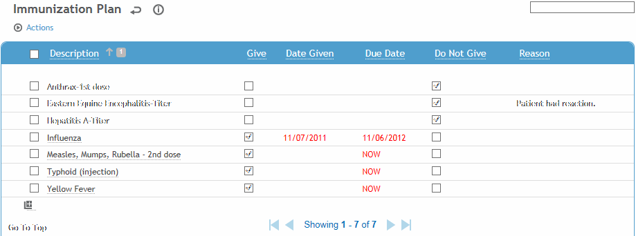

If you have set up the look-up tables to link immunizations to destinations, the required immunization will appear in red as Due Now. For more information, see Look-up Tables Used by This Module and Working with Employee Recalls.

Immunizations already given are listed with the date given.
All immunizations that are linked to the selected travel destination(s) will show a due date in the Due Date column:
-
If the employee has never received this immunization, the due date will show as DUE NOW.
-
If the employee has already received this immunization, the Date Given is populated from the immunization record, and the next due date will appear in the Due Date column, unless the activity is flagged as “Don't Recall” in the ExposureGroup look-up table (Due Date will be blank).
Any contraindicated immunizations are flagged as “Do Not Give” and will show a reason of either Allergy or Medication and will display the allergy or medication that is linked to the contraindication (e.g. “Allergy: EGGS” or “Medication:Tylenol 3”). Only active medications are included (i.e. End Date is blank or in the future). If the contraindication was manually added to the employee record, it will be flagged as “Do not Give” and will show the reason that was entered in the Reason field of the Contraindication record.
Any immunizations previously declined by the employee are flagged as “Do Not Give” with the Reason entered in the declined immunization record.
To manually flag an immunization as Do Not Give, choose Actions»Do Not Give. You are prompted to enter the Reason. You cannot do this if it is already flagged as “Give”.
-
To turn off a Do Not Give flag, choose Actions»Unmark Do Not Give. You can only do this if the Do Not Give flag was applied manually (i.e. not for contraindications).
To direct that an immunization should be given to the employee, select the checkbox to the left of the immunization, then choose Actions»Give. You are prompted to enter a Due Date. You can only mark an immunization as Give if it is linked to an Activity Code (i.e. there is an entry in the ScheduleActivity look-up table that is linked to the Immunization module and linked to the immunization test). You cannot mark an immunization as Give if it is already marked as “Do Not Give”.
-
To turn off a “Give” flag, choose Actions»Unmark Give. You can only do this if the Give flag was applied manually (i.e. not for surveillance immunization tests, which have the Due Date auto-populated and are automatically marked as Give).
To add an immunization test to the immunization plan, click the “add” shortcut icon  (see Adding New Records) and choose from all Schedule Activity Codes that are linked to the Immunization module.
(see Adding New Records) and choose from all Schedule Activity Codes that are linked to the Immunization module.
To create a new immunization record, click the link for the immunization name. You will be taken to a new immunization record, populated with the employee name and immunization. Complete the immunization record, then click the back arrow at the top of the form to return to the immunization plan. For more information, see Entering an Immunization Record.
Click Save. Any new immunizations will be added to the Appointments/Scheduling module.